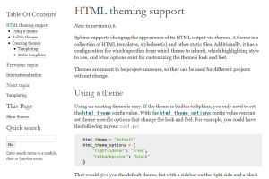
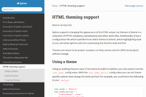
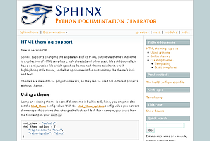
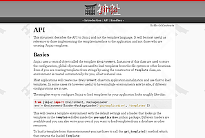
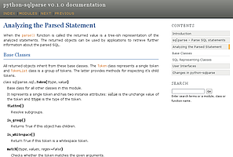
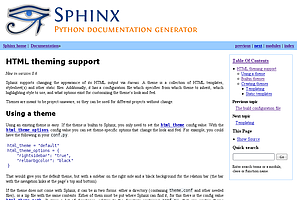
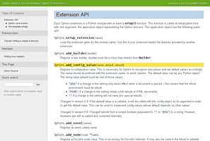
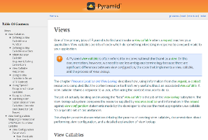
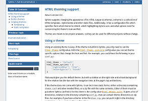

HTML theming support¶
New in version 0.6.
Sphinx supports changing the appearance of its HTML output via themes. A theme is a collection of HTML templates, stylesheet(s) and other static files. Additionally, it has a configuration file which specifies from which theme to inherit, which highlighting style to use, and what options exist for customizing the theme’s look and feel.
Themes are meant to be project-unaware, so they can be used for different projects without change.
Using a theme¶
Using an existing theme is easy. If the theme is builtin to Sphinx, you only
need to set the :confval:`html_theme` config value. With the
:confval:`html_theme_options` config value you can set theme-specific options
that change the look and feel. For example, you could have the following in
your conf.py:
html_theme = "classic"
html_theme_options = {
"rightsidebar": "true",
"relbarbgcolor": "black"
}
That would give you the classic theme, but with a sidebar on the right side and a black background for the relation bar (the bar with the navigation links at the page’s top and bottom).
If the theme does not come with Sphinx, it can be in two static forms: either a
directory (containing theme.conf and other needed files), or a zip file
with the same contents. Either of them must be put where Sphinx can find it;
for this there is the config value :confval:`html_theme_path`. It gives a list
of directories, relative to the directory containing conf.py, that can
contain theme directories or zip files. For example, if you have a theme in the
file blue.zip, you can put it right in the directory containing
conf.py and use this configuration:
html_theme = "blue"
html_theme_path = ["."]
The third form provides your theme path dynamically to Sphinx if the
setuptools package is installed. You can provide an entry point section
called sphinx_themes in your setup.py file and write a get_path function
that has to return the directory with themes in it:
// in your 'setup.py'
setup(
...
entry_points = {
'sphinx_themes': [
'path = your_package:get_path',
]
},
...
)
// in 'your_package.py'
from os import path
package_dir = path.abspath(path.dirname(__file__))
template_path = path.join(package_dir, 'themes')
def get_path():
return template_path
New in version 1.2: ‘sphinx_themes’ entry_points feature.
Builtin themes¶
| Theme overview | |
 alabaster |
 sphinx_rtd_theme |
classic |
 sphinxdoc |
 scrolls |
 agogo |
 traditional |
 nature |
haiku |
 pyramid |
 bizstyle |


Sphinx comes with a selection of themes to choose from.
These themes are:
basic – This is a basically unstyled layout used as the base for the other themes, and usable as the base for custom themes as well. The HTML contains all important elements like sidebar and relation bar. There are these options (which are inherited by the other themes):
- nosidebar (true or false): Don’t include the sidebar. Defaults to
False. - sidebarwidth (an integer): Width of the sidebar in pixels. (Do not
include
pxin the value.) Defaults to 230 pixels.
- nosidebar (true or false): Don’t include the sidebar. Defaults to
alabaster – Alabaster theme is a modified “Kr” Sphinx theme from @kennethreitz (especially as used in his Requests project), which was itself originally based on @mitsuhiko’s theme used for Flask & related projects. You can get options information at Alabaster theme page.
sphinx_rtd_theme – Read the Docs Sphinx Theme. This is a mobile-friendly sphinx theme that was made for readthedocs.org. View a working demo over on readthedocs.org. You can get options information at Read the Docs Sphinx Theme page.
classic – This is the classic theme, which looks like the Python 2 documentation. It can be customized via these options:
- rightsidebar (true or false): Put the sidebar on the right side.
Defaults to
False. - stickysidebar (true or false): Make the sidebar “fixed” so that it
doesn’t scroll out of view for long body content. This may not work well
with all browsers. Defaults to
False. - collapsiblesidebar (true or false): Add an experimental JavaScript
snippet that makes the sidebar collapsible via a button on its side.
Doesn’t work with “stickysidebar”. Defaults to
False. - externalrefs (true or false): Display external links differently from
internal links. Defaults to
False.
There are also various color and font options that can change the color scheme without having to write a custom stylesheet:
- footerbgcolor (CSS color): Background color for the footer line.
- footertextcolor (CSS color): Text color for the footer line.
- sidebarbgcolor (CSS color): Background color for the sidebar.
- sidebarbtncolor (CSS color): Background color for the sidebar collapse
button (used when collapsiblesidebar is
True). - sidebartextcolor (CSS color): Text color for the sidebar.
- sidebarlinkcolor (CSS color): Link color for the sidebar.
- relbarbgcolor (CSS color): Background color for the relation bar.
- relbartextcolor (CSS color): Text color for the relation bar.
- relbarlinkcolor (CSS color): Link color for the relation bar.
- bgcolor (CSS color): Body background color.
- textcolor (CSS color): Body text color.
- linkcolor (CSS color): Body link color.
- visitedlinkcolor (CSS color): Body color for visited links.
- headbgcolor (CSS color): Background color for headings.
- headtextcolor (CSS color): Text color for headings.
- headlinkcolor (CSS color): Link color for headings.
- codebgcolor (CSS color): Background color for code blocks.
- codetextcolor (CSS color): Default text color for code blocks, if not set differently by the highlighting style.
- bodyfont (CSS font-family): Font for normal text.
- headfont (CSS font-family): Font for headings.
- rightsidebar (true or false): Put the sidebar on the right side.
Defaults to
sphinxdoc – The theme used for this documentation. It features a sidebar on the right side. There are currently no options beyond nosidebar and sidebarwidth.
scrolls – A more lightweight theme, based on the Jinja documentation. The following color options are available:
- headerbordercolor
- subheadlinecolor
- linkcolor
- visitedlinkcolor
- admonitioncolor
agogo – A theme created by Andi Albrecht. The following options are supported:
- bodyfont (CSS font family): Font for normal text.
- headerfont (CSS font family): Font for headings.
- pagewidth (CSS length): Width of the page content, default 70em.
- documentwidth (CSS length): Width of the document (without sidebar), default 50em.
- sidebarwidth (CSS length): Width of the sidebar, default 20em.
- bgcolor (CSS color): Background color.
- headerbg (CSS value for “background”): background for the header area, default a grayish gradient.
- footerbg (CSS value for “background”): background for the footer area, default a light gray gradient.
- linkcolor (CSS color): Body link color.
- headercolor1, headercolor2 (CSS color): colors for <h1> and <h2> headings.
- headerlinkcolor (CSS color): Color for the backreference link in headings.
- textalign (CSS text-align value): Text alignment for the body, default
is
justify.
nature – A greenish theme. There are currently no options beyond nosidebar and sidebarwidth.
pyramid – A theme from the Pyramid web framework project, designed by Blaise Laflamme. There are currently no options beyond nosidebar and sidebarwidth.
haiku – A theme without sidebar inspired by the Haiku OS user guide. The following options are supported:
- full_logo (true or false, default
False): If this is true, the header will only show the :confval:`html_logo`. Use this for large logos. If this is false, the logo (if present) will be shown floating right, and the documentation title will be put in the header. - textcolor, headingcolor, linkcolor, visitedlinkcolor, hoverlinkcolor (CSS colors): Colors for various body elements.
- full_logo (true or false, default
traditional – A theme resembling the old Python documentation. There are currently no options beyond nosidebar and sidebarwidth.
epub – A theme for the epub builder. This theme tries to save visual space which is a sparse resource on ebook readers. The following options are supported:
- relbar1 (true or false, default
True): If this is true, the relbar1 block is inserted in the epub output, otherwise it is omitted. - footer (true or false, default
True): If this is true, the footer block is inserted in the epub output, otherwise it is omitted.
- relbar1 (true or false, default
- bizstyle – A simple bluish theme. The following options are supported
beyond nosidebar and sidebarwidth:
- rightsidebar (true or false): Put the sidebar on the right side.
Defaults to
False.
- rightsidebar (true or false): Put the sidebar on the right side.
Defaults to
New in version 1.3: ‘alabaster’, ‘sphinx_rtd_theme’ and ‘bizstyle’ theme.
Changed in version 1.3: The ‘default’ theme has been renamed to ‘classic’. ‘default’ is still available, however it will emit notice a recommendation that using new ‘alabaster’ theme.
Creating themes¶
As said, themes are either a directory or a zipfile (whose name is the theme name), containing the following:
- A
theme.conffile, see below. - HTML templates, if needed.
- A
static/directory containing any static files that will be copied to the output static directory on build. These can be images, styles, script files.
The theme.conf file is in INI format [1] (readable by the standard
Python ConfigParser module) and has the following structure:
[theme]
inherit = base theme
stylesheet = main CSS name
pygments_style = stylename
[options]
variable = default value
- The inherit setting gives the name of a “base theme”, or
none. The base theme will be used to locate missing templates (most themes will not have to supply most templates if they usebasicas the base theme), its options will be inherited, and all of its static files will be used as well. - The stylesheet setting gives the name of a CSS file which will be
referenced in the HTML header. If you need more than one CSS file, either
include one from the other via CSS’
@import, or use a custom HTML template that adds<link rel="stylesheet">tags as necessary. Setting the :confval:`html_style` config value will override this setting. - The pygments_style setting gives the name of a Pygments style to use for highlighting. This can be overridden by the user in the :confval:`pygments_style` config value.
- The options section contains pairs of variable names and default values.
These options can be overridden by the user in :confval:`html_theme_options`
and are accessible from all templates as
theme_<name>.
Templating¶
The guide to templating is helpful if you want to write your own templates. What is important to keep in mind is the order in which Sphinx searches for templates:
- First, in the user’s
templates_pathdirectories. - Then, in the selected theme.
- Then, in its base theme, its base’s base theme, etc.
When extending a template in the base theme with the same name, use the theme
name as an explicit directory: {% extends "basic/layout.html" %}. From a
user templates_path template, you can still use the “exclamation mark”
syntax as described in the templating document.
Static templates¶
Since theme options are meant for the user to configure a theme more easily, without having to write a custom stylesheet, it is necessary to be able to template static files as well as HTML files. Therefore, Sphinx supports so-called “static templates”, like this:
If the name of a file in the static/ directory of a theme (or in the user’s
static path, for that matter) ends with _t, it will be processed by the
template engine. The _t will be left from the final file name. For
example, the classic theme has a file static/classic.css_t which uses
templating to put the color options into the stylesheet. When a documentation
is built with the classic theme, the output directory will contain a
_static/classic.css file where all template tags have been processed.
| [1] | It is not an executable Python file, as opposed to conf.py,
because that would pose an unnecessary security risk if themes are
shared. |